All My Publication
-
1. Antonina Simakova, Saadyah Averick, Arman Moini Jazani and
Krzysztof Matyjaszewski. Controlling Size and Surface Chemistry of
Cationic Nanogels by Inverse Microemulsion ATRP, Macromolecular
chemistry and physics, 2022, Macromol. Chem. Phys. 2022, 2200210.
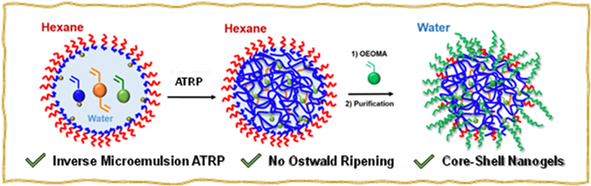
See The Source
-
2. Arman Moini Jazani and Jung Kwon Oh. Synthesis of multiple
stimuli-responsive degradable block copolymers via facile carbonyl
imidazole-induced postpolymerization modification, Polymer
Chemistry, 2022, 13, 4557-4568. 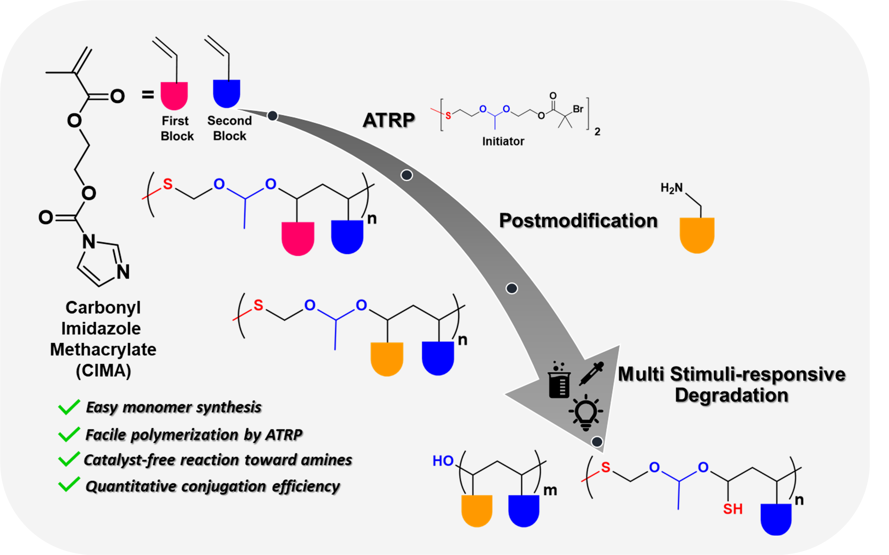
See The Source
-
3. Moonhyun Choi, Arman Moini Jazani, Jung Kwon Oh and Seung Man
Noh. Perfluorocarbon nanodroplets for dual delivery with
ultrasound/GSH-responsive release of model drug and passive release
of nitric oxide, Polymers, 2022, 14, 2240.
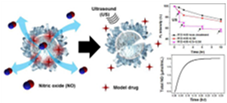
See The Source
-
4. Arman Moini Jazani, Newsha Arezi, Chaitra Shetty, Jung Kwon Oh.
Shell-Sheddable/Core-Degradable ABA Triblock Copolymer
Nanoassemblies: Synthesis via RAFT and Concurrent ATRP/RAFT
Polymerization and Drug Delivery Application, Molecular
Pharmaceutics, 2021, 19, 1786-1794.
 See The Source
See The Source
-
5. Xiaolei Hu, Arman Moini Jazani, and Jung Kwon Oh. Recent advances
in development of imine-based acid-degradable polymeric
nanoassemblies for intracellular drug delivery, Polymer, 2021, 230,
124024.
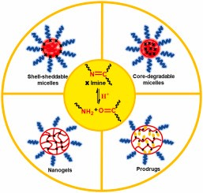
See The Source
-
6. Arman Moini Jazani, Chaitra Shetty, Hourieh Movasat, Kamaljeet K.
Bawa and Jung Kwon Oh. Imidazole-mediated dual location disassembly
of acid-degradable intracellular drug delivery block copolymer
nanoassemblies, Macromolecular Rapid Communications, 2021, 2100262.
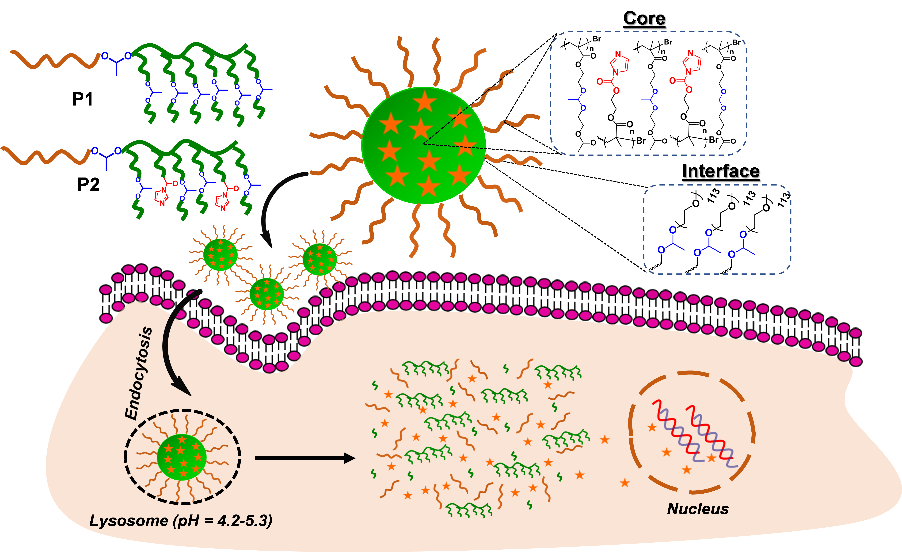
See The Source
-
7. Ge Zhang, Twinkal Patel, Pothanagandhi Nellepalli, Shubham
Bhagat, Hanees Hase, Arman Moini Jazani, Ingo Salzmann, Zhibin Ye
and Jung Kwon Oh. Macromolecularly engineered thermoreversible
heterogeneous self‐healable networks encapsulating reactive
multidentate block copolymer‐stabilized carbon nanotubes,
Macromolecular Rapid Communications, 2021, 200514.
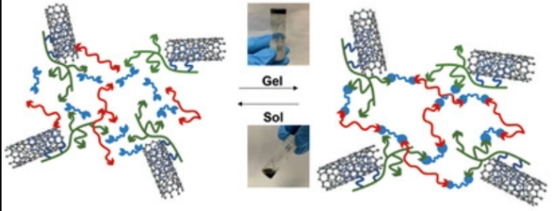
See The Source
-
8. Yuhang Huang, Arman Moini Jazani, Elliot P. Howell, Lisa
Reynolds, Jung Kwon Oh and Matthew G. Moffitt, ACS Biomaterials
Science & Engineering, 2020, 6, 9, 5069-5083.
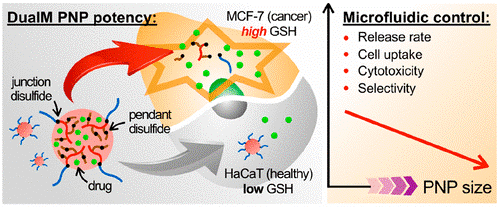
See The Source
-
9. Arman Moini Jazani and Jung Kwon Oh. Development and disassembly
of single and multiple acid-cleavable block copolymer nanoassemblies
for drug delivery, Polymer Chemistry, 2020, 11, 2934-2954.
 See The Source
See The Source
-
10. Kamaljeet K. Bawa, Arman Moini Jazani, Zhibin Ye, Jung Kwon Oh.
Synthesis of degradable PLA-based diblock copolymers with dual
acid/reduction-cleavable junction, Polymer, 2020, 194, 122391.
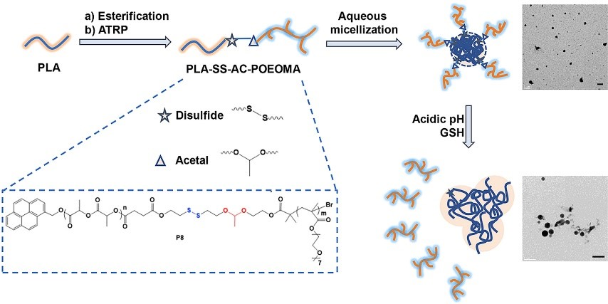
See The Source
-
11. Keaton Maruya-Li, Chaitra Shetty, Arman Moini Jazani, Newsha
Arezi, Jung Kwon Oh., ACS Omega, 2020, 5, 3734–3742.
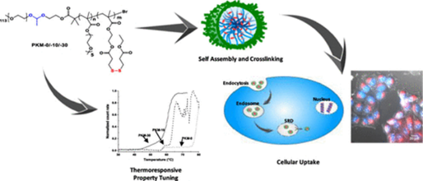
See The Source
-
12. Yuhang Huang, Arman Moini Jazani, Elliot P. Howell, Jung Kwon
Oh, Matthew G. Moffitt. Controlled microfluidic synthesis of
biological stimuli-responsive polymer nanoparticles. ACS Applied
Materials and Interface, 2020, 12, 1, 177-190.
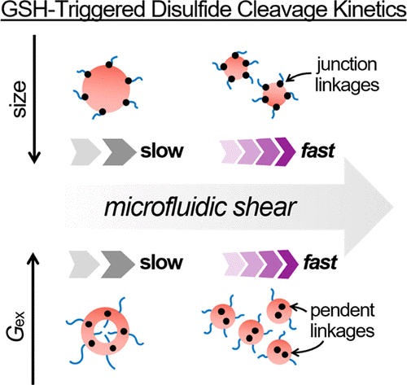
See The Source
-
13. Arman Moini Jazani, Newsha Arezi, Chaitra Shetty, Sunghwa Hong,
Haowen Li, Xiangtao Wang, Jung Kwon Oh. Tumor-targeting
intracellular drug delivery based on dual acid/reduction-degradable
nanoassemblies with ketal interface and disulfide core locations.
Polymer Chemistry, 2019, 10, 2840-2853.
 See The Source
See The Source
-
14. Kamaljeet K. Bawa, Arman Moini Jazani, Chaitra Shetty and Jung
Kwon Oh. PLA-based triblock copolymer micelles exhibiting dual
acidic pH/reduction responses at dual core and core/corona interface
location. Macromolecular Rapid Communications, 2018, 39, 1800477.
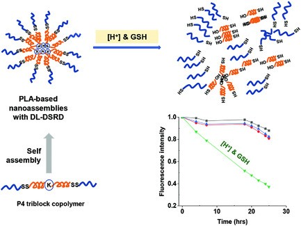
See The Source
-
15. Arman Moini Jazani, Newsha Arezi, Keaton Maruya-Li, Sungmin
Jung, Jung Kwon Oh. Facile strategies to synthesize dual location
dual acidic pH/ reduction-responsive degradable block copolymers
bearing acetal/disulfide block junctions and disulfide pendants. ACS
Omega, 2018, 3, 8980- 8991.
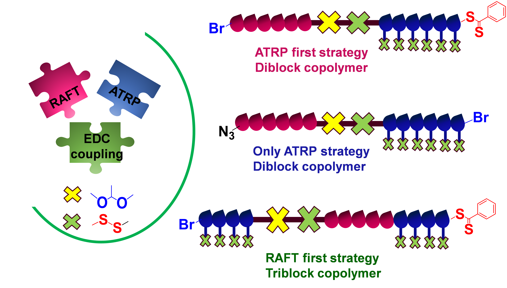
See The Source
-
16. Arman Moini Jazani and Jung Kwon Oh. Dual location, dual acidic
pH/reduction-responsive degradable block copolymer: synthesis and
investigation of ketal linkage instability under ATRP conditions.
Macromolecules, 2017, 50, 9427-9436.
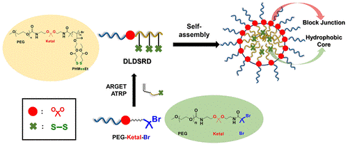
See The Source